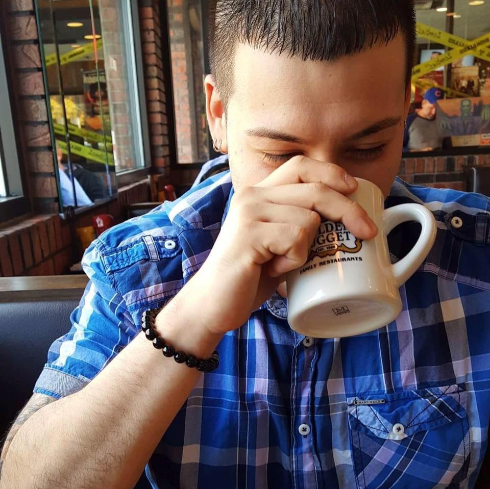

About Me

Hi there!
Thanks for coming to my page, I suppose you want to know a little about me since you clicked on the "About me" link above. Lets see what can I say...
For starters I'm currently enrolled in Northwestern Professional Schools for web developement. I been in the professional tech field for a little over 11 years now and love it. Since i was younger I was always into gadgets and technology. One of the biggest influences had to be video games. I loved playing them when I was younger, and I still do till this day!
Aside from technology, I enjoy working out (boxing), Djing at clubs/bars, driving my Evolution X, and riding my Ducati during summers. I would say that I'm definately a city guy. Born and raised in Chicago, IL.
Every year for the last 3 years I go to Blizzcon out in Anehiem California. As I mentioned earlier I love gaming, specifically PC gaming. Yes I do have a crazy built computer at home (2 of them to be exact). Blizzcon hosts the Overwatch World Championships every year, that being said, Overwatch is my number 1 game of choice that I play. After attending Blizzcon and researching the company Blizzard, I realized that my dream is to work at Blizzard Entertainment. Call it a long shot but it certainly is something I'm really aiming towards with a passion. I hope after completeing this course and building up my experience throughout the time at my current place of employment, that dream will become a reality!